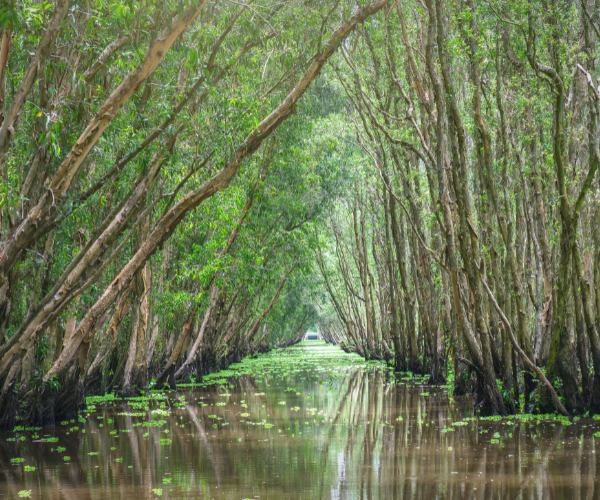
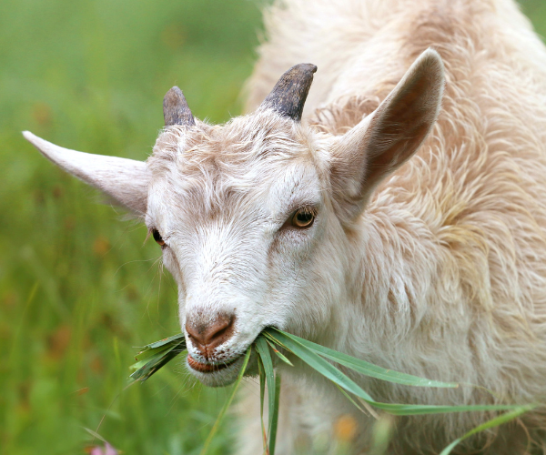

We take great pride in all our attempts to conserve biodiversity and sustainable development of food and non-food systems.


Conservation of our wetlands

Animal and livestock management

Sustainable agriculture
Recent Updates
Media Releases
25.03.2025
T&T hosts Ground-breaking Event to Strengthen Animal Health Systems
Media Releases
01.03.2025
Closure of the 2024-2025 Hunting Season
Media Releases
28.02.2025
2025 Sea-Turtle Nesting Season Begins March 1st
Media Releases
08.02.2025
Largest-Ever Cheque Distribution for Agriculture Ministry
New to our website?
Lean more about the the Ministry of Agriculture, Land and Fisheries and our Vision for Trinidad and Tobago.explore